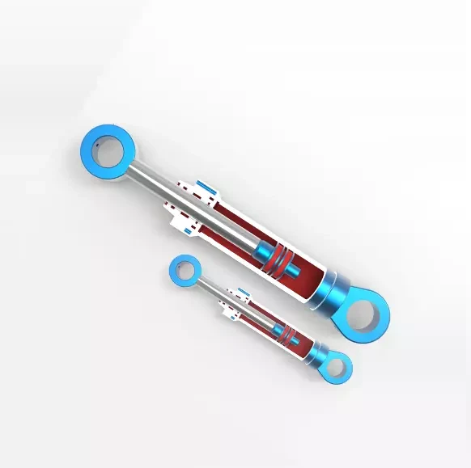

Hydraulic seals
Hydraulic seals control fluid leakage, maintain working pressure and help keep contaminants out of the cylinder. A complete sealing arrangement combines dynamic seals, guides and static sealing elements.
Application details +
- Rod seals seal the piston rod; piston seals control flow between cylinder chambers.
- Wear rings carry side loads and help prevent metal-to-metal contact.
- Wipers exclude dirt; O-rings and back-up rings support static sealing.